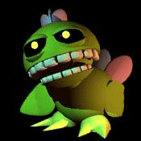
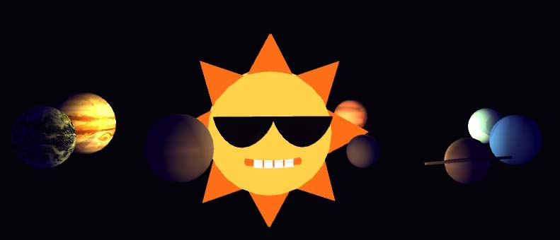

WELCOME TO SCIENCE!
This web site is your best source for science facts and fun! The Henotic Edutainment League of Paradise is dedicated to providing people young and old with thorough yet entertaining information, quick and simple. Check back here in the future for our latest educational projects!

How do we do it? How do we ensure our knowledge is exact? Quite simple - the H.E.L.P. Elysium Encyclopaedia supercomputer! Originally starting with the entire Encyclopaedia Britannica, articles are updated as often as possible by researches and scientists. Every time an update is made to the database, the supercomputer analyses all other articles to ensure the update is accurate according to all information. If an important scientific breakthrough is made, this analysis will be skipped, and every other article will be updated with this new information.

MEET THE SCIENCE BIRD!
The Science Bird is the latest, greatest, smartest, and most advanced educational and fun digital friend! Download him onto your personal computer to play with him and learn all about the world we're in! You can talk to him, ask him questions,
and teach him your favourite games. The time for science will now begin! The Science Bird will be released December! Click here to go to the download page!
UPDATE - AUGUST: There have been some serious issues regarding the Science Bird project. The release of the program will be delayed until further notice. The H.E.L.P. staff apologizes for any inconvenience this brings to teachers and students alike.
What's the Henotic ECOLOGY League of Paradise?

Why, that's us! Nature is a lovely part of science, and we love trees! In fact, if you enter our mailing list, we'll E-mail you a tree seed every month! Enter here:
Note: this service has been discontinued as we discovered you cannot send physical items in E-mail.

This web-site is under construction

Copyright Henotic Edutainment League of Paradise